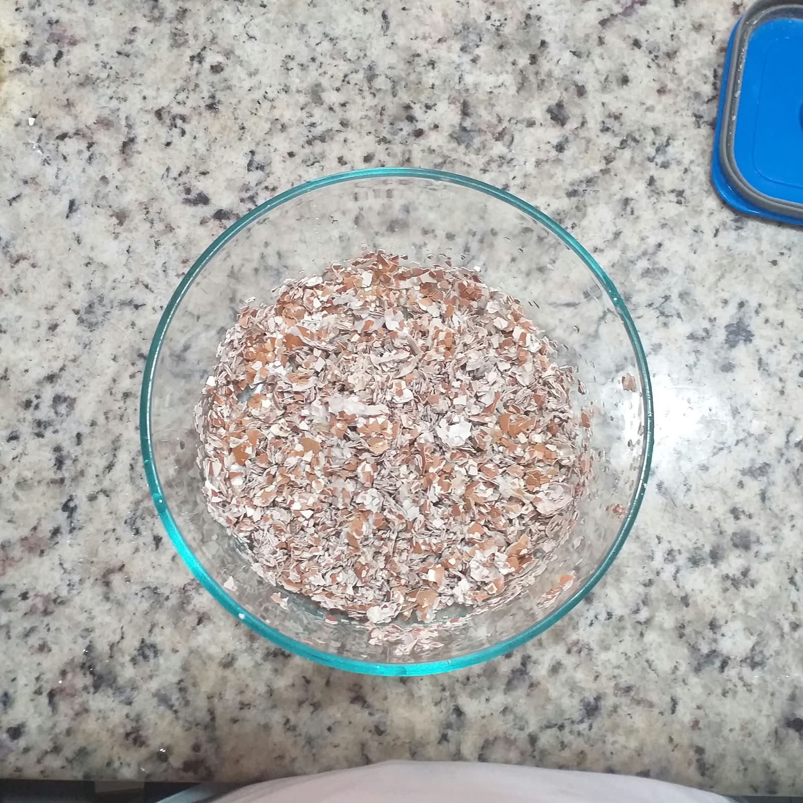
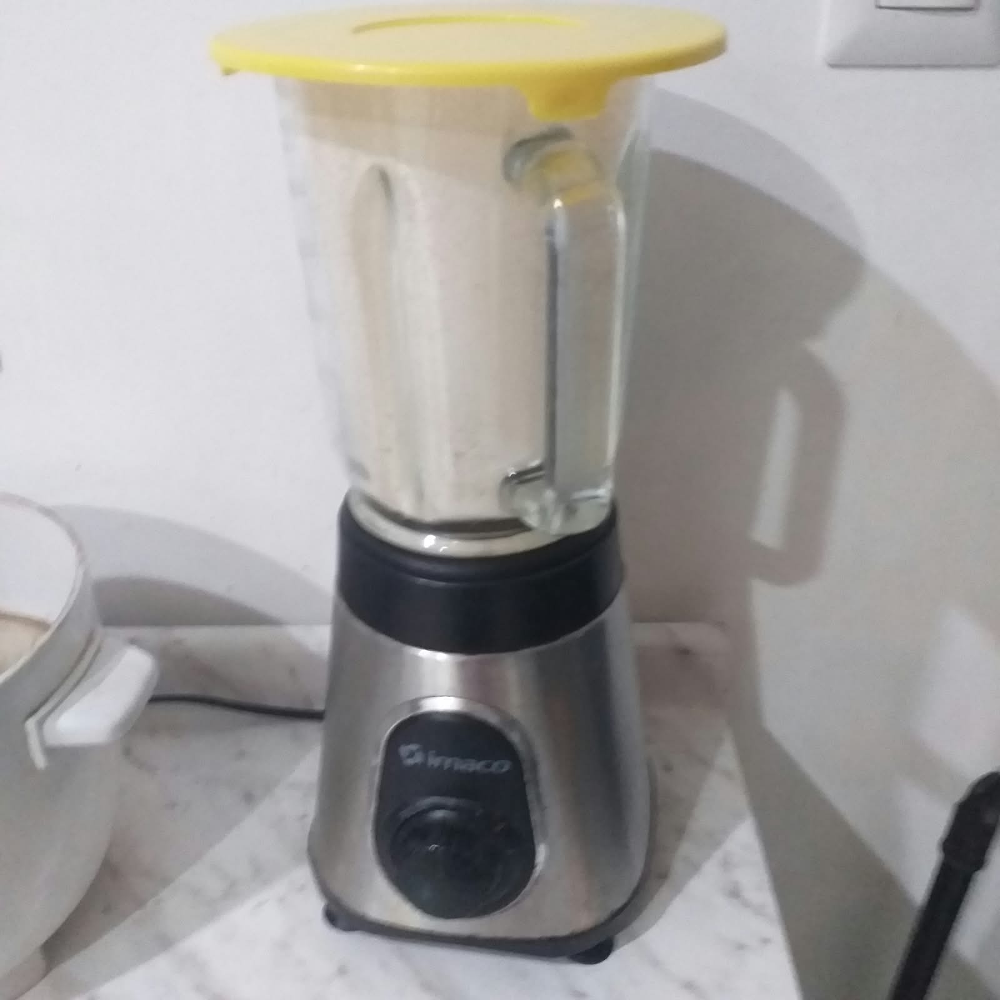
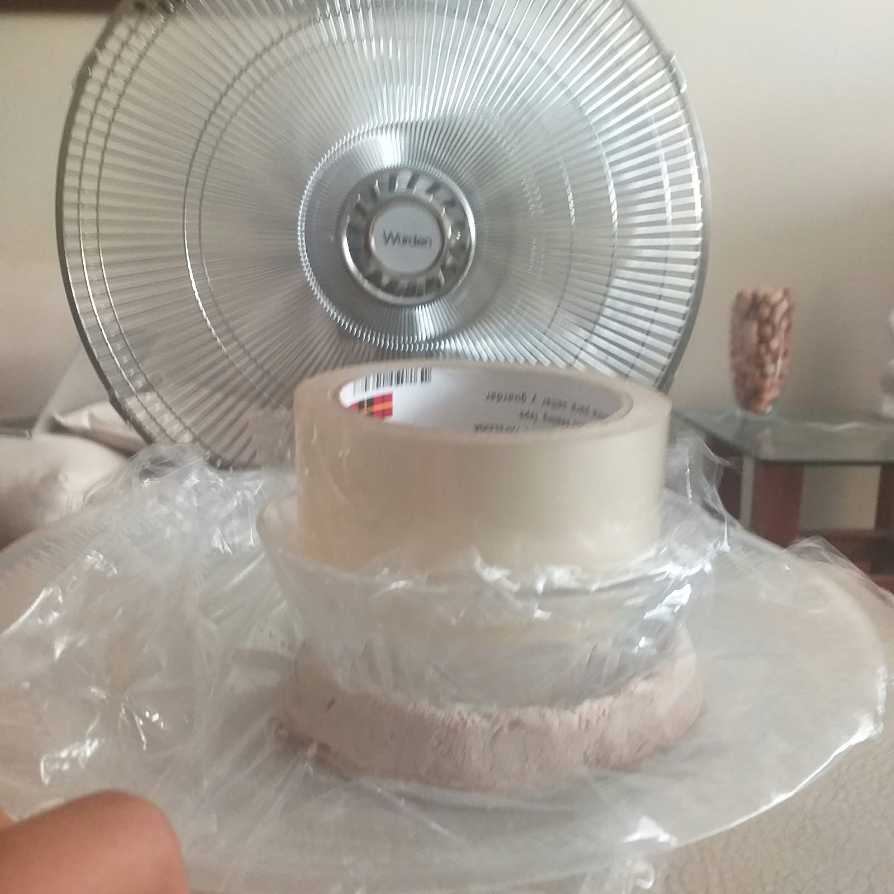
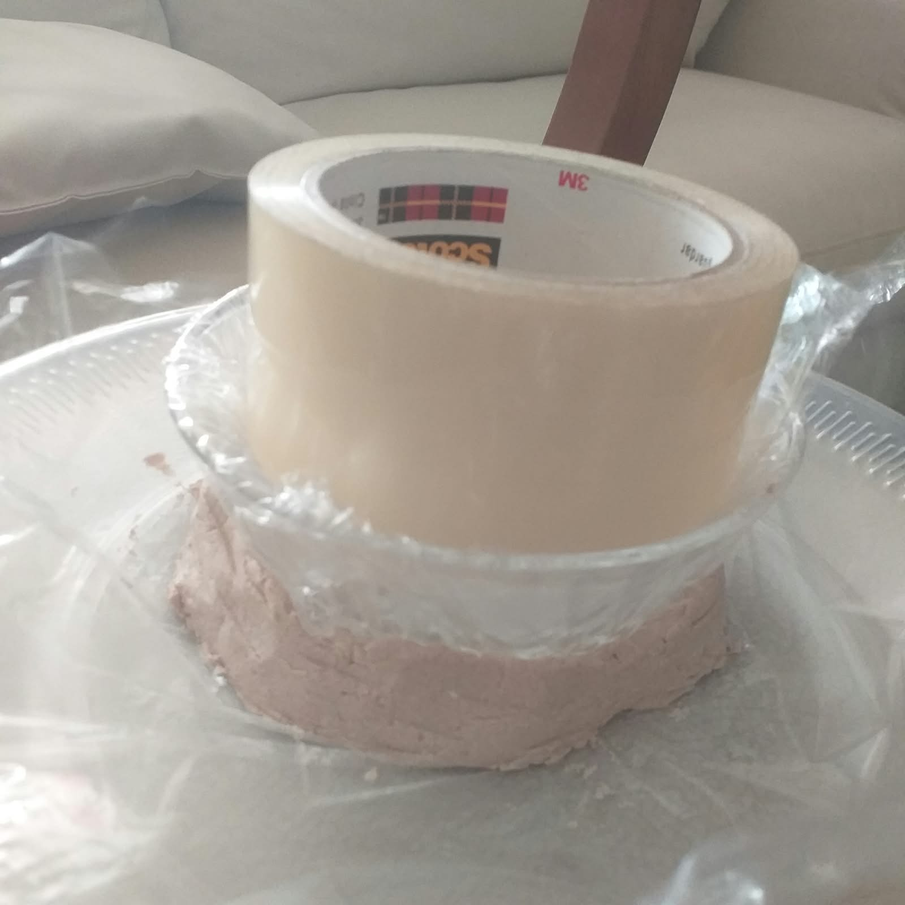
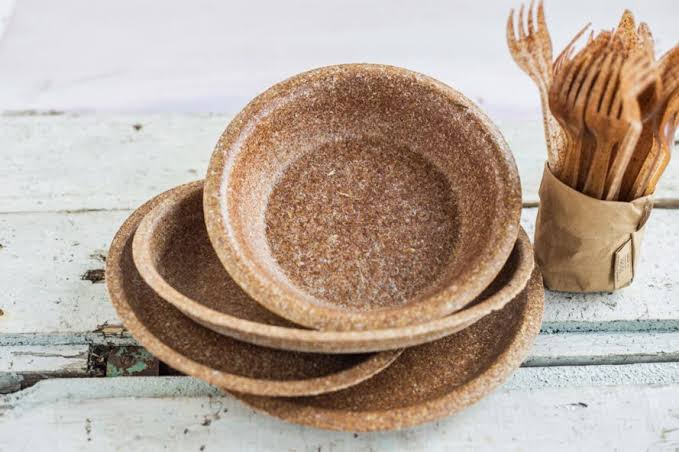
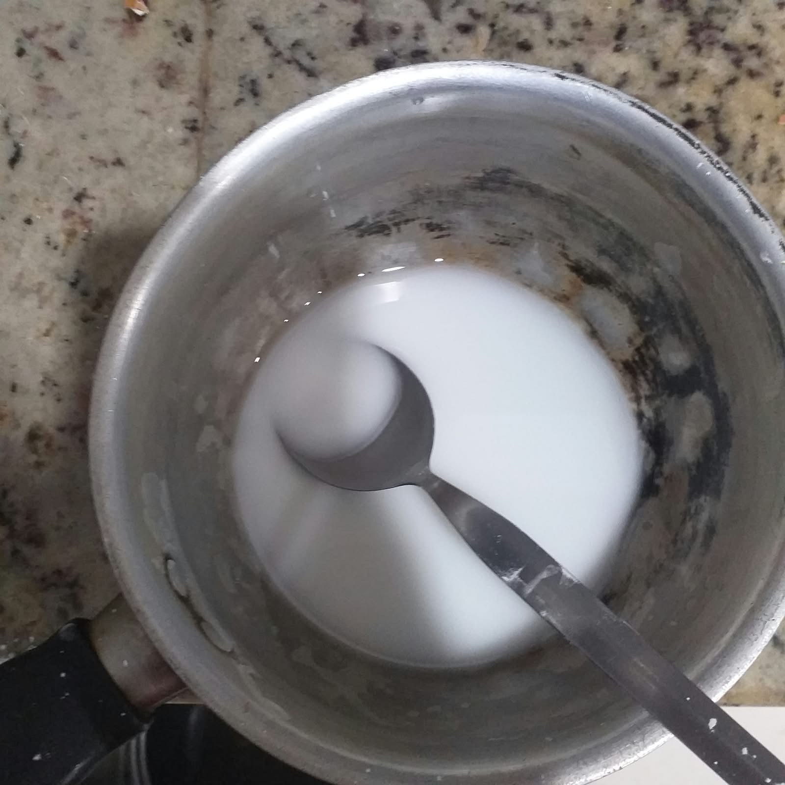

❌ El problema
Uso excesivo de plásticos descartables- Generación de residuos.
- Contaminación ambiental.
- Productos pensados para un solo uso.
FERIA DE CIENCIAS · PROYECTO ESCOLAR
“Transformamos un residuo en una alternativa para cuidar nuestra Casa Común.”
Explorando, investigando y transformando nuestro entorno.
En la vida cotidiana utilizamos platos, vasos y cubiertos descartables. Estos productos generan residuos y pueden permanecer mucho tiempo en el ambiente. A la vez, las cáscaras de huevo suelen terminar en la basura, aunque son un residuo orgánico que podemos explorar de nuevas maneras.
Este fue el recorrido de nuestro experimento, desde la preparación hasta el producto final.
Lavamos, secamos y trituramos las cáscaras de huevo.
Combinamos agua, almidón de maíz, vinagre y glicerina.
Añadimos el polvo de cáscara y mezclamos hasta obtener una preparación homogénea.
Colocamos la mezcla en un molde con forma de plato.
Dejamos secar el producto en un lugar ventilado durante el tiempo establecido.
Finalmente obtuvimos nuestro plato biodegradable.
Las cantidades indicadas corresponden a la preparación descrita para este proyecto.
6 etapas para transformar un residuo en una propuesta de producto.





Completa estos campos con las observaciones de tu equipo. El gráfico comienza vacío para no mostrar datos inventados.
Introduce valores de 0 a 100 solo si tu equipo los midió. La escala no representa porcentajes científicos predeterminados.
Escala visual editable de 0 a 100; registra solo valores obtenidos con el método de evaluación del proyecto.
El proyecto se relaciona con el ODS 12 porque reutiliza las cáscaras de huevo como residuo orgánico para crear un nuevo producto y promueve el uso responsable de los recursos.
Este proyecto busca contribuir al cuidado del ambiente al reutilizar residuos orgánicos y explorar alternativas frente a los plásticos de un solo uso.
“Pequeñas acciones pueden hacer la diferencia en nuestra Casa Común.”
San Francisco de Asís es una inspiración para respetar la naturaleza y valorar todos los elementos de la creación.
“Así como buscamos reutilizar lo que normalmente consideramos un desecho, podemos aprender que cuidar la naturaleza también comienza con pequeñas acciones.”
Descubre cómo una cáscara de huevo puede convertirse en una propuesta innovadora.
Espacio reservado para el video del proyecto
Configura VIDEO_URL en el script al final de este archivo para insertar un enlace de YouTube o un video local.
Sube una foto para compartir tu plato con la comunidad. Las imágenes publicadas serán visibles para todas las personas que visiten esta página.
GALERÍA COLABORATIVA
Una propuesta escolar para cuidar nuestra Casa Común.
♻️ ODS 12La galería compartida está lista para conectarse al almacenamiento.
Respuestas breves para conversar sobre la investigación.
Está elaborado principalmente a partir de polvo de cáscara de huevo combinado con los demás materiales utilizados en nuestro experimento.
Porque buscamos reutilizar un residuo orgánico que normalmente se desecha.
ODS 12: Producción y consumo responsables.
Elaborar platos biodegradables a base de cáscara de huevo para buscar una alternativa frente al uso de plásticos de un solo uso.
Que la investigación y la innovación pueden ayudarnos a buscar soluciones para problemas de nuestro entorno.
Explora cuántos gramos de cáscara quieres reutilizar. La cantidad de platos solo se estima si tu equipo completa una equivalencia propia.
La equivalencia es definida por el equipo; no se aplica una conversión científica predeterminada.
La estimación de peso por cáscara está basada en una referencia de cáscaras secas de huevos comerciales. Pesa las de tu familia y ajusta el dato para mejorar el cálculo.
El valor de 5,5 g es orientativo; el peso real cambia entre huevos. Fuente: University of Florida IFAS.
Una transformación que comienza con curiosidad e investigación.
La pregunta, hipótesis y variables orientan el proyecto. Explora también el proceso, los prototipos y lo que aún falta medir.
¿Es posible fabricar platos biodegradables utilizando cáscaras de huevo como alternativa ecológica al plástico?
Si se elaboran platos biodegradables utilizando cáscara de huevo, entonces se reducirá el impacto ambiental de los residuos plásticos de un solo uso, porque la cáscara de huevo es un material natural y rico en calcio.
Independiente: cantidad de cáscara de huevo utilizada.
Dependiente: resistencia y durabilidad de los platos.
De control: cantidad de agua, tiempo de secado y temperatura.
Humedad del ambiente, pureza de la cáscara y forma de triturado.
Selecciona una etapa para ver el registro breve del procedimiento.
La tabla separa lo que el proyecto ya sabe de lo que falta evaluar. No se asignan precios ni tiempos de degradación no medidos.
| Atributo | Plato Eco-Huevo | Tecnopor (EPS) | Plástico convencional |
|---|---|---|---|
| Degradación / fin de vida | Tiempo de degradación de este prototipo: pendiente de ensayo controlado. | La aceptación en reciclaje domiciliario es limitada y depende del municipio. | Los residuos pueden persistir mucho tiempo; duración depende del material y ambiente. |
| Costo | Pendiente: calcular materiales, energía y tiempo del equipo. | Pendiente: cotizar un producto comparable en la localidad. | Pendiente: cotizar un producto comparable en la localidad. |
| Toxicidad / contacto con alimentos | No evaluado. No usar con alimentos hasta comprobar el uso previsto y la seguridad. | Depende de la composición y del uso autorizado; no se evaluó aquí. | Depende del material y del uso autorizado; no se evaluó aquí. |
Fuentes: EPA sobre reciclaje de poliestireno, NOAA sobre degradación de residuos marinos y FDA sobre materiales en contacto con alimentos. La aceptación de reciclaje y los precios varían según el lugar.
Recorre fotografías del proceso y el resultado compartido. El espacio para un intento fallido queda señalado hasta que agreguen una foto real.

Registro real del equipo triturando las cáscaras.
La mezcla se preparó con los materiales del proyecto.
La forma del plato se obtiene en el molde.
El material se deja en un lugar ventilado.
Documentar también los intentos fallidos permite comparar cambios y explicar cómo evolucionó el experimento.
Imagen añadida por el equipo para mostrar la propuesta terminada.
Las fotografías del proceso son archivos locales de este proyecto. Cuando el QR “Mira el experimento” esté listo, puede enlazarse a esta página.
El experimento permitió elaborar platos a partir de cáscara de huevo. Según las observaciones realizadas en el proyecto, presentaron características de resistencia y facilidad de degradación. La propuesta permite reutilizar un residuo orgánico y explorar alternativas al plástico. Completa esta conclusión con las evidencias y condiciones registradas por tu equipo.
Explorando, investigando y transformando nuestro entorno desde un Currículo Evangelizador.